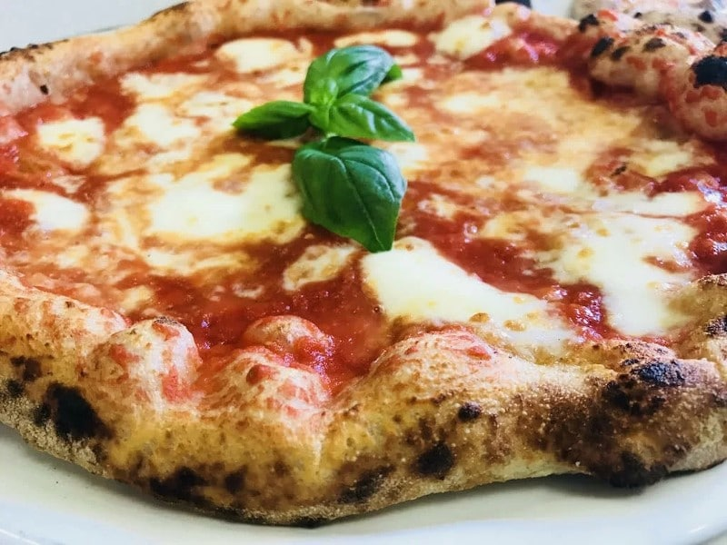

The authentic Neapolitan pizza recipe

Description
Neapolitan pizza (Italian: Pizza Napoletana), also known as Naples-style pizza, is a style of pizza made with tomatoes and mozzarella cheese.
The tomatoes must be either San Marzano tomatoes or Pomodorino del Piennolo del Vesuvio. The cheese must be Mozzarella di Bufala Campana or Fior di Latte.
Ingredients
- For the dough
With 00 flour (recommended):
- Flour – 640g
- Water (room temperature) – 360g
- Salt (fine) – 14g
- Yeast (dried or fresh) – around 0.2g to 0.5g (depending on yeast type & room temperature)
With Strong white bread flour (decent substitute for 00 flour):
- Flour – 620g
- Water (room temperature) – 380g
- Salt (fine) – 14g
- Yeast (dried or fresh) – around 0.2g to 0.5g (depending on yeast type & room temperature)
- For the toppings
- 300g tin of plum tomatoes
- Tomato puree (optional) – a tablespoon
- Salt – sprinkling of table salt or sea salt
- Pepper – freshly ground black pepper
- Mozzarella – 2 x 125g bags of fresh Mozzarella balls
- Parmesan – about 30g
- Olive Oil – a few glugs
- Basil – hand full of fresh leaves
Steps
- For the dough
Tips:
- This recipe is for a 24 hour prove. I know it sounds like a long time but don’t worry!
- Simply make the dough the night before you want to make pizza and you will be good to go on the following evening
- Don’t worry about exact timings, anywhere around 20-28 hours will be fine.
- Mix all the ingredients into a shaggy mass in a large bowl, starting by adding the water first. You can do this by hand or use a wooden spoon.
- Cover the bowl with cling film, a plastic carrier bag, or a damp cloth (if the cloth isn’t damp the dough may dry out).
- Leave the dough to rest for around 1 hour(the technical term for this process is the Autolyse).
- Turn the dough out onto the counter and knead for around 5 minutes.
- Place the dough back into the bowl and cover.
- Leave the dough to prove(in one big lump, don’t worry about the shape) for around 20 hours.
- Divide the dough into 4 equal parts(250g each) using some kitchen scales and a knife (or dough scraper). Do this about 4 hours before you intend to cook the pizza (after about a 20 hour prove).
- Place each dough ball into a small bowl and cover. Alternatively, use a large tupperware container with a lid, or two smaller ones.
- Leave the dough balls to prove again for about 4-6 hours.